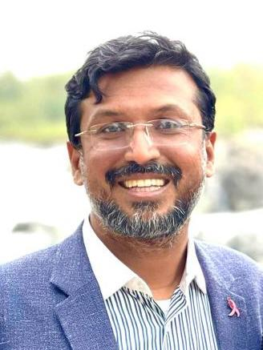
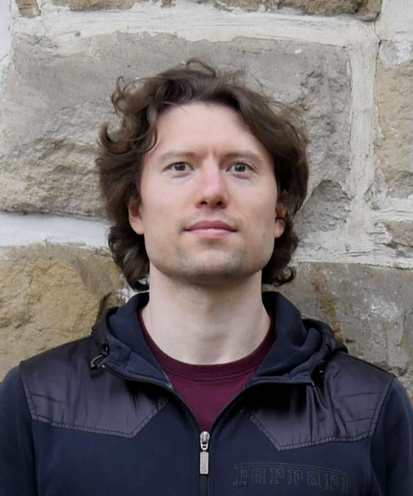
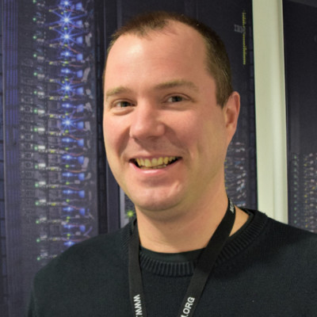
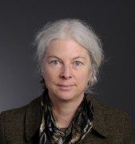

Intelligent Systems Research Centre
Ulster University (Derry~Londonderry Campus)
Seminar Series
Seminars usually take place from 12.30-1.30pm on Wednesdays in person the MS building board room (MS105) and/or streamed online via Microsoft Teams. Contact Cian O'Donnell or Louise Gallagher for more information.
Seminar archives: 2022/23.
21/02/24
Melissa Melaugh
Webpage
A Computational Approach to Uncertainty in DNA Sequences
DNA sequencing is the process of reading individual base pairs from a section of DNA. Genes are the name given to parts of the DNA which encode proteins; for example ion channels are proteins that maintain concentrations of ions within cells. The sequencing of these genes can offer insights into factors such as evolution and disease. During the sequencing process, unknown values 'N' can be substituted in the sequence where the sequencing machine is unable to identify a nucleotide as Adenine (A), Cytosine (C), Thymine (T), or Guanine (G). These gene sequences vary in length; this includes individual genes across the same species. This has led to the use of a process known as k-mer encoding so that a machine learning algorithm can assess these genes without the need for pre-alignment. K-mer encoding works by taking small sections of the sequence and tallying the number of times that such a sequence appears, such as, how many times the k-mer 'ACCT' appears in the overall sequence. The unknown 'N' value presents a problem in k-mer encoding, as this value increases the size of the k-mer feature vector exponentially as the k-mer length increases. In this paper we research the accuracy and computational impact of including, removing, or ignoring this 'N' value for the k-mer lengths 3, 6, and 9 across four Machine Learning algorithms: Random Forest, Multinomial Naive Bayes, Neural Networks, and Linear Support Vector Machine.
Paper link here.
Amin Azimi
Research interests: Decision making, computational modeling of brain rhythms and memory consolidation during sleep.
Nonlinear interplay among hippocampal-thalamic-cortical oscillations during sleep.
The predominant activity of slow wave sleep is cortical slow oscillations (SOs), thalamic spindles and hippocampal sharp wave ripples. While the precise temporal nesting of these rhythms was shown to be essential for memory consolidation, the coordination mechanism is poorly understood. Here we develop a minimal hippocampo-cortico-thalamic network that can explain the mechanism underlying the SO-spindle-ripple coupling indicating of the succession of regional neuronal interactions. Further we verify the model predictions experimentally in naturally sleeping rodents showing our simple model provides a quantitative match to several experimental observations including the nesting of ripples in the spindle troughs and larger duration but lower amplitude of the ripples co-occurring with spindles or SOs compared to the isolated ripples. The model also predicts that the coupling of ripples to SOs and spindles monotonically enhances by increasing the strength of hippocampo-cortical connections while it is stronger at intermediate values of the cortico-hippocampal projections
06/03/24: Arkady Zgonnikov (TU Delft)
Webpage
I develop cognitive models of human behavior in human-robot interactions, with an emphasis on automated driving. I also work in collaboration with some of the world's best researchers in robotics and AI to incorporate these cognitive models into the design of robots and automated driving systems.
Driver behavior in traffic interactions: A new testbed for computational cognitive models?
Computational cognitive models are typically evaluated in abstract, highly controlled tasks, which allows one to rigorously test assumptions about cognitive mechanisms underlying human behavior in these tasks. However, the lack of research on testing cognitive models in ecologically valid settings often renders it unclear whether the cognitive mechanisms they represent are as paramount to actual human behavior outside the laboratory. One prominent example of this is evidence accumulation models of decision making, which are commonly evaluated in distilled perceptual or preferential tasks with little to no task dynamics or motor constraints. In this talk, I will present the recent work from our lab which investigates evidence accumulation in the wild, specifically in the context of naturalistic human driver behavior in traffic interactions. Unlike traditional decision-making paradigms, decisions in traffic expose humans to complex and dynamic perceptual information as well as response constraints imposed by task dynamics. I will show how these complexities can pose new challenges for evidence accumulation models, and outline how these challenges can be addressed. I will conclude with a perspective on how computational cognitive models can aid in developing autonomous vehicles capable of interacting with humans around them.
20/03/23
Abdoreza Asadpour
Webpage
Unveiling the Depths of Decision-Making: Early Neural Correlates of Confidence and Deeper Cortical Insights through Dynamic Causal Modelling.
Perceptual confidence, defined as the internal evaluation of the accuracy of one's perceptual decisions, plays a pivotal role in modulating our interactions with the external world. This process involves assessing the reliability of sensory information and making judgments about its accuracy, thereby influencing subsequent decisions and actions. A debate persists within the prior research regarding the relationship between confidence evaluations and decision performance. Some researchers posit that these processes are interlinked and that confidence evaluations can modulate decision performance. In contrast, others maintain that confidence evaluations and decision processes are distinct and operate independently. This dichotomy is exemplified by studies that have identified early confidence correlates during stimulus presentation, as well as research arguing that confidence evaluations occur post-decision. The contrasting perspectives on the temporal dynamics of confidence evaluations highlight the necessity of investigating the neural mechanisms underlying perceptual decision-making and confidence to enhance our understanding of these interconnected processes. While functional magnetic resonance imaging (fMRI) and electroencephalography (EEG)-informed fMRI have been the primary tools for identifying active brain regions and examining functional connectivity, directed connectivity approaches such as dynamic causal modelling (DCM) can offer invaluable insights into the causal relationships between these regions. In this talk, using DCM, I will talk about the complex relationship between neural activities, subjective confidence ratings, and choice-based RTs to delineate their collective impact on confidence evaluation processes, and whether perceptual decision confidence and speed share similar neural circuits.
Yasir Ijaz
Webpage
Computer Vision for Cobotics
This study considers the problem of using a robotic system for transporting semiconductor wafers within a production facility and loading/offloading wafers onto/from the ports of the wafer processing tools. Every semiconductor wafer processing tool primarily consists of a port that serves as an interface to receive and output wafers, and also several chambers to process the wafers within the tool. Most semiconductor wafer manufacturing processes are extremely complex and highly re-entrant. Here, re-entrance denotes that the wafer can visit the same tool several times during the manufacturing process of a wafer. A single wafer production can have over 1600 unique processing stages (steps). As an important part of factory/process automation, there is a need to employ mobile robots for the transportation of semiconductor wafers.
4pm on 25/03/24: Yogesh Kumar (Indian Institute of Technology Gandhinagar)
Webpage
Yogesh K Meena is an Assistant Professor at the Indian Institute of Technology Gandhinagar, India, with a Ph.D. in computer science from Ulster University, Londonderry, U.K. He received his Integrated Post-Graduate (B.Tech. and M.Tech.) degree in information technology from the Indian Institute of Information Technology and Management, Gwalior, India, in 2010. From 2021 to 2023, he was an AI Software Development Engineer and a Senior AI Software Development Engineer at the University of Essex, UK, where he worked on an Innovate UK - UKRI-funded project in collaboration with Mersea Homes Ltd. From 2018 to 2021, he was a Postdoctoral Research Officer in the FIT Lab at Swansea University, UK, where he worked on an EPSRC-funded project in collaboration with Google, DST Innovations Ltd, and IIT Bombay. Prior to this, he was a Postdoctoral Research Assistant at the School of Computing, Engineering, and Intelligent Systems at Ulster University, Londonderry, UK, and a Visiting Research Fellow at the Center for Mechatronics and the Department of Humanities and Social Sciences at IIT Kanpur, India. His primary research interests include Human-Computer Interaction, Brain-Computer Interface, Eye-gaze tracking, Motor control and rehabilitation, Artificial Intelligence/Machine Learning, and the Internet of Things.
Hybrid human-computer interfaces with applications in assistive technologies and neuro-rehabilitation
Human-computer interface (HCI) and brain-computer interface (BCI) based assistive technologies (ATs) and neuro-rehabilitation can provide novel communication mediums that can aid in removing many barriers that people with disabilities face. Specifically, eye-tracking-based HCIs and non-invasive BCIs open up new pathways of interaction for speech, motor, and cognitively impaired people. Eye-tracking-based ATs can be designed by using a dedicated eye-tracking device which acquires and processes eye-gaze. Similarly, BCI-based ATs and neuro-rehabilitation can be designed by decoding electroencephalography (EEG) signals over the sensorimotor cortex of a user by performing motor imagery (MI) tasks. However, there are several challenges to overcome before eye-tracking-based HCIs and MI-based BCIs become suitable for wider practical use. The usability of eye-tracking-based HCIs is limited due to factors such as low accuracy of detection of the eye-gaze coordinates, difficulties in accurate quantification of user's intentions, and involuntary eye movements. Likewise, the main challenges with current BCI systems are the limited number of commands, the selection of the most appropriate brain activities, environmental noise, and usability issues in real-world scenarios. These challenges can be better addressed by designing a hybrid-multimodal system that involves a combination of complementary neurophysiological and other physiological signals, which is the primary aim of this talk. In short, this talk will cover novel contributions towards 1) the analysis of neurophysiological and other physiological signals; and 2) the design of robust hybrid-multimodal HCI systems with applications in ATs and neuro-rehabilitation for speech and motor-impaired people.
12pm on 26/03/24: Khondaker A. Mamun (United International University, Bangladesh)
Webpage
Khondaker Mamun received Ph.D. from University of Southampton and Postdoc from University of Toronto. He is a Professor of AI and Digital Health at the United International University (UIU), Bangladesh. Prof. Mamun is the Founder of AIMS Lab (www.aimsl.uiu.ac.bd) at UIU, where his team actively performs R&D on the applications of 4IR technologies like, AI, Big-Data and IoT for healthcare, disabilities, education and brain computer interface(BCI). Prof. Mamun established Bangladesh’s first BCI lab and Institute of Research Innovation, Incubation and Commercialization (IRIIC) at UIU. He has published more than 200 articles and holds patients. He has invented and implemented intelligent systems, rehabilitations and digital healthcare models including GP model with referrals for urban and rural areas. His research and innovation have been featured in news and recognized locally and internationally. He received National Award from Honorable Prime Minister for his contribution to Autism and “Digital Bangladesh Award 2022” for smart healthcare innovation. Prof. Mamun is the founder of CMED Health (www.cmed.com.bd), a university research to commercialization that are working to create health inclusion for UHC and serving over 2.5 million people in Bangladesh. He contributed to introduce first DBS surgery for Parkinson’s patients in Bangladesh in collaboration with NINS and University of Oxford, UK. Prof. Mamun contributed in WHO/ITU Focus Group on AI4H; Digital Health Strategy and AI Policy of Bangladesh; MTR of 4th HPNSP, MOHFW; Innovation Ecosystem Development, Hi-Tech Park; Industry Accademia Collaboration, UGC. He worked for WHO, Unicef, ADB and World Bank on digital health. His team awarded grants from Bill & Melinda Gates Foundation, IDRC, Canada and other agencies.
Establishing Research and Innovation Culture in Low Resource Countries: Context of Bangladesh
In a low-resource country like Bangladesh grapples with myriad hurdles in research and innovation. A primary concern is insufficient funding, impeding progress and resource acquisition as well as lack of industry, academia and government collaboration. Cultural barriers further obstruct interdisciplinary collaboration, stunting researcher support and commercialisation of knowledge. However, Bangladesh boasts a demographic dividend, urgent societal demands, and a burgeoning entrepreneurial scene, offering distinct prospects. Cultivating a research and innovation ethos demands unwavering commitment, determination and visionary strategies, and a drive to bridge gaps, from research to commercialisation towards building Smart Bangladesh. In this talk we will share experiences of building R&D Lab and Innovation Hub at the university to solve social and industrial problems towards developing knowledge based economy towards transformation to a developed country.
17/04/24: Yasir Ali Shah
Webpage
Title TBC
Abstract TBC
01/05/24
Oleg Senkevich
Webpage
Title TBC.
Abstract TBC
Niall McShane
Webpage
Title TBC.
Abstract TBC
15/05/24: Deepika Nikam
Webpage
Title TBC
Abstract TBC
29/05/24
Nidhin Thandassery Sumithran

Webpage
Title TBC.
Abstract TBC
Jonathan Robinson
Title TBC.
Abstract TBC
12/06/24: David Meredith (Hartree Centre)
Webpage
David is Research Software Engineering (RSE) group lead and a software architect at the STFC Hartree Centre with ~20 years software dev experience, particularly in Web, Grid, Cloud and Enterprise domains. The RSE team has three core capability themes: 1) Scientific application development with applied HPC and AI; 2) Distributed System Engineering and DevOps including Full-Stack, Web, Cloud and Enterprise application & service development; 3) Client liaison, project scoping and design-thinking activities.
Title TBC
Abstract TBC.
26/06/24: Barbara Webb (University of Edinburgh)
Webpage
My main research interest is in perceptual systems for the control of behaviour, through building computational and physical (robot) models of the hypothesised mechanisms. In particular I focus on insect behaviours, as their smaller nervous systems may be easier to understand. Recent work includes study of some of the more complex capabilities of insects, including multimodal integration (in crickets and flies), navigation (in ants) and learning (in flies and maggots). I also have an interest in theoretical issues of methodology; in particular the problems of measurement, modeling and simulation.
Title TBC
Abstract TBC.